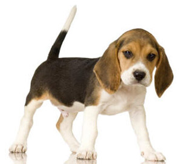
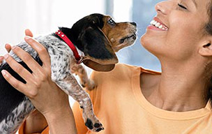
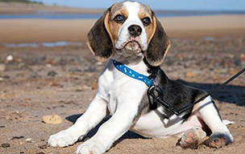

The most famous beagle in the world was right. Throughout history, these very important pups have rubbed shoulders with British kings and queens, and toward the end of the 19th century, they became the hunting partners of the aristocracy. Beagles were found to be so suited to the chase that the ability to hunt down prey in challenging terrain relying only on a keen sense of smell became known as beagling. Your V.I.P. may have left the sport of "beagling" to the pages of history, but he still possesses the traits that made him a great beagler. Generations of being bred for the chase can make modern household training a challenge, so read on for tips on how to train your very important pup to obey you even when he hears the sound of a hunter's bugle.
Someone always leaves and then we have to say good-bye. I hate good-byes. I know what I need. I need more hellos.
- Snoopy
To be a good hunting companion, the beagle was bred to be intelligent, energetic, independent-minded and to have an overwhelming desire to be part of a pack. These great qualities, if not addressed, can morph into problem behaviors.
Separation Anxiety:
Beagles crave the attention of their "human pack" more than most other breeds. If left alone for long periods, your beagle will get into trouble. Before heading out the door to work, give your pet a brisk walk, a run around the park or a game of Frisbee to burn off that overabundance of energy. This will help reduce his anxiety and keep your house in one piece.
Digging:
Beagles dig for a variety of reasons -- boredom, to cool off in the freshly dug earth or just because it's fun. Whatever the motive, distract him from the flowerbed by making sure he has plenty of appropriate dog toys while out in the yard. If you have the room, create an area where your beagle can be a beagle and dig to his heart's content.
Attention-getting Vocalizations:
Call it howling, baying or barking, beagles were bred to have a distinctive voice that carried for miles. What better way to alert hunters to prey? Since you probably don't need your dog to point out a downed rabbit, train you dog to know when howling is and isn't appropriate. By teaching your talkative pup the commands "speak" and "quiet," you will have control over when and where he decides to let his presence be known.
Chasing:
No explanation is needed for how this behavior originated. Because beagles will take any opportunity to get a taste of freedom, keeping a beagle on a leash and having a fenced-in yard is important for your sanity as well as the safety of your wannabe hunter. The National Beagle Club of America recommends fences be at least 5 feet (1.5 meters) tall and also suggests installing chicken wire or cement at the base of the fence to deter escapes through an excavated tunnel.
Because beagles were bred to be independent-minded and the masters of their own path, your very important pup may think he's the one in charge. Establishing that you are the alpha leader right from the start is critical. Being the person in charge means correcting misbehaviors with a firm (but not harsh) tone of voice. For appropriate deeds, your tone of voice should convey, "You're the best dog in the world," and should be accompanied by treats. Fortunately, beagles are very food-motivated, so as the keeper of doggie delicacies your dog will think, "You're the best owner in the world."
Obedience school should be started as soon as your dog is old enough to attend classes. Getting together regularly with dog owners and their puppies is a great way to socialize your dog, and since beagles can become aggressive if they haven't been exposed to a variety of dogs, people and situations, attending obedience classes could prevent future problems.
An interesting smell, a flash of something furry with four legs, a sudden need to run with the wind -- just about anything can trigger your beagle's "remembrance" of days gone by. All dogs need to be taught the basic commands of come, stay and sit, but for a beagle these simple words could save his life. Always associate these commands with positive reinforcement (food!) and good times. A dog that's been asked to sit, stay or come for punishment will think twice about responding when he hears these words.
Chances are that if you've been out for a walk with your beagle, your anticipated leisurely stroll has ended up being a tug-of-war. Beagles are always looking for that fox just around the corner, so you'll find your walking companion trying to run with an invisible pack as you attempt to keep up. To break this habit, use the beagle's obsession with food. As he lunges ahead, stop in place and call his name. When he returns to your side, give him a special treat and lots of praise. He'll soon learn that being next to you is a lot more fun than charging ahead even if that fox is just around the corner.
A beagle's nose isn't just for show. Although most dogs have around 220 million scent receptors compared to only 5 million or so in humans, scent dogs have even more smell cells. The beagle's small nose holds a whopping 225 million receptors, as many as a German shepherd, according to psychologist and canine researcher Dr. Stanley Coren. In other words, beagles were born to sniff. Your beagle will spend so much time with his nose skimming the ground, you wouldn't be surprised if he had skid marks on the end of his snout.
You can't train a beagle, or any dog for that matter, not to sniff. It's how they find out what's going on in their world. You can, however, train your dog to sniff less at certain times -- say, when you want to go for a walk. Get your dog's attention with a treat. (Not surprisingly, a particularly smelly treats work wonders.) Instead of giving the treat to your pup, bring it up to your face at eye level and say his name. After some satisfying eye contact and lots of praise, let him enjoy his reward. Eventually, looking up once in a while will become more of a treat than sniffing an elusive scent.
Your dog's penchant for sniffing, however, is also a great opportunity. Why not rejoice in your dog's special abilities by playing sniffing games, such hiding a favorite toy or treat around the house and sending your dog in search of his "prey"? Your dog will love having the chance to just be a beagle.
Source 1: 5 beagle training tips
Source 2: Beagle photo